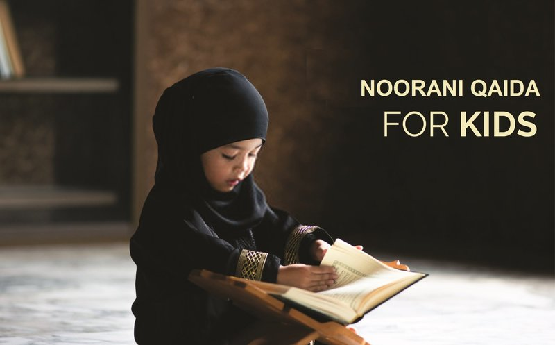
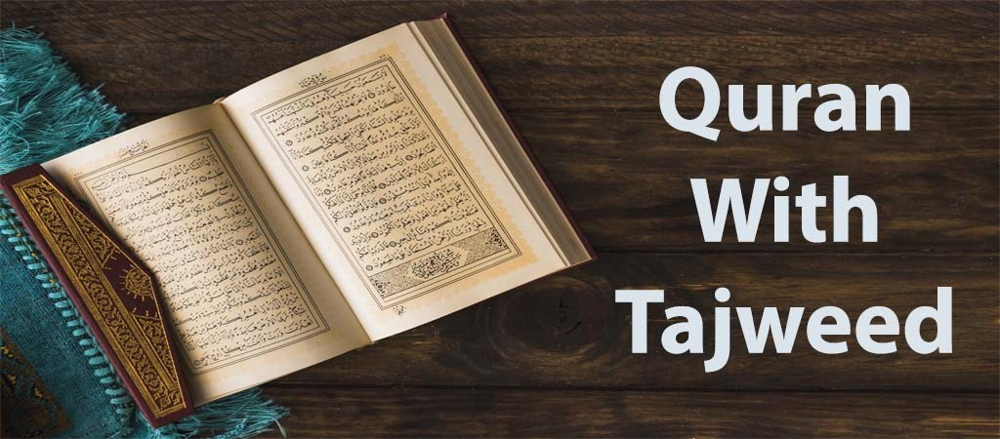

Noor e Quran Academy is a well-known, reliable, and registered online Quran teaching institution that offers Learn Quran with Tajweed with experienced & qualified Quran tutors. Now you get Quran teaching, Arabic language and Islamic education classes from your home. We offer cost-effective online Quran reading classes for kids, adults and people of all ages.
Noor e Quran Academy is providing Quran and Islamic education through an online platform. The goal of the institute is to give Muslims the chance to learn and understand the Quran. Our online classes are suitable for all the family members including kids. The courses are for every Muslim around the world.

Learn Noorani Qaida Online
Course Detail
Noorani Qaida is the very basic book to learn the rules of Tajweed. It mostly teach to those students who are beginners in learning Quran.

Learn Quran With Tajweed
Course Detail
The word Tajweed mean to read words correctly with proper pronunciation. It’s our ethical duty to read the Holy Quran with correct Tajweed.

Online Quran Memorization
Course Detail
Quran Memorization means to memorize the Quran and to learn it by your heart. Memorize the Holy Quran, is a religious, mental, spiritual and physical project of every Muslim.